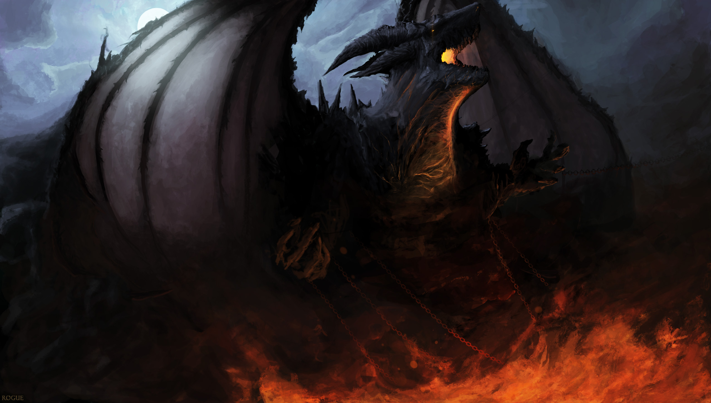
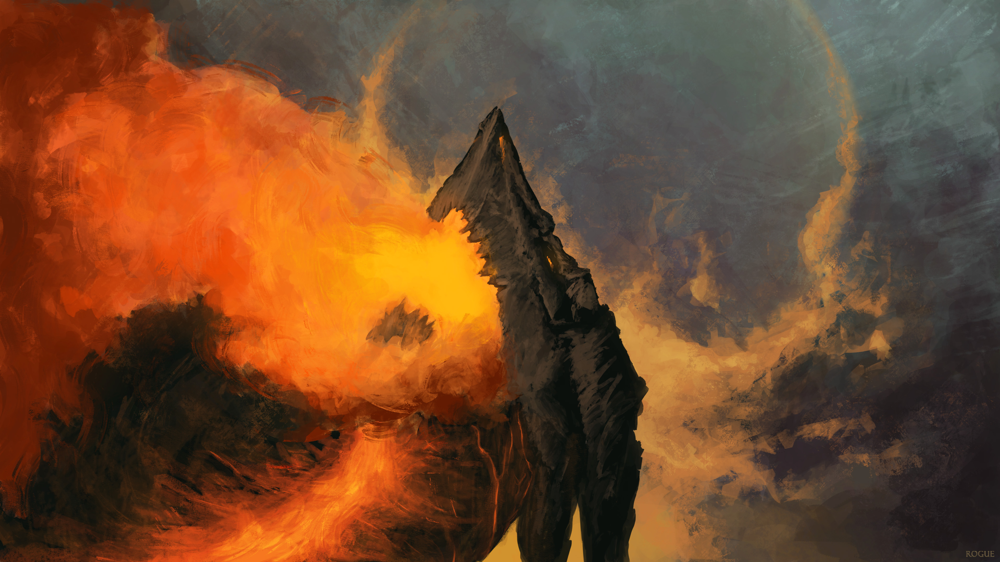

Rise, the Breaker of Bindings, Moon Eater

Class:
Dragon (Ferron)
Size Rank:
Gigant
est. 59m
Generation:
Third
Last Host:
Galfridus the Fallen
Feared by many for his uncontrollable, irritable nature, Rahznir was a beast who was involved in the downfall of two kingdoms, Qidal and Dresia, and one major world alliance: the Coalition of the United Front. Among Rahznir's notable features is his head and crest, which take after the lineage of the early ferrons, or the "anvil-shaped" dragons which ruled alongside their common counterparts. The beast sported two pairs of massive, spiraling jagged peaks as a crest, a ridge of thick spikes along his back, shoulders, and sides, rugged osteodermic skin, and a distinguishable glow of firelight for an underside which is often depicted with his visage; that which emits alongside his breath as a violent, exhaust of his rage.
Rahznir is often accompanied with the idea of resistance, enslavement, and liberation. Though many see his shadow as utter destruction and bestial terror, in it was left a precedent that even the most powerful of kingdoms can fall, their crowns temporal, their armies mortal, and their ambition fragile. Concurrently, despite his fall of status, he could not be felled through the decades by the Order of the Fellwardens and forces of the Coalition, and within the havoc of shifting agencies and class-order restructuring, he gained his most recognizable of titles from the masses: "Rise", of which none truly know if his very name takes after the word or not.
Being mystbound, there is a strong historical connection to both him and his last known bearer, Galfridus the Fallen. Having particpated in many wars and battles in servitude to the Dresian kingdom, and living through four generations of their bloodline under the Gastorn family, Rahznir's strength was unrivaled, yet his temper grew with his age. The Gastor family noted traits of defiance, aggression, isolatory behaviors, and gruesome mishaps with servants and even members of the family. Eventually, with remediation proving unsuccessful, a hostile conflict arose between the two, and Rahznir violently emerged and separated from his bearer, slaughtering the royal family and anyone near, and leaving Galfridus bedridden within a vegetative state (until his death a two months later) from the forceful severance of the link. To date, this is the only occurrence which documents severance, and it is still unclear as to how the event transpired.
Subsequently, the detrimental effects of being unbound drew Rahznir to a madness and unending wrath against humanity, its kingdoms, and the very nature of myst itself. His title of Moon Eater originates from his documented ritual of being most active during particular phases of the moon cycle, where it is theorized he was able to absorb atmospheric myst that lingered in the air. Such events were consistent and fall in line with scholarly studies about myst and its properties, leaving theories that Rahznir may have been a contributing factor to the loss of the potency of myst and its involved role within the present day.
Within records, Rahznir was sometimes seen inhabiting the fallen remains of both Dresia and the desolate battlefields within the United Front's stretches, of which both he had brought ruin to, and would challenge those of his kin or other beasts to disputation, or issues of combat. None could fell him still, and for another four decades did he reign, until his first and final defeat which led to his death.
